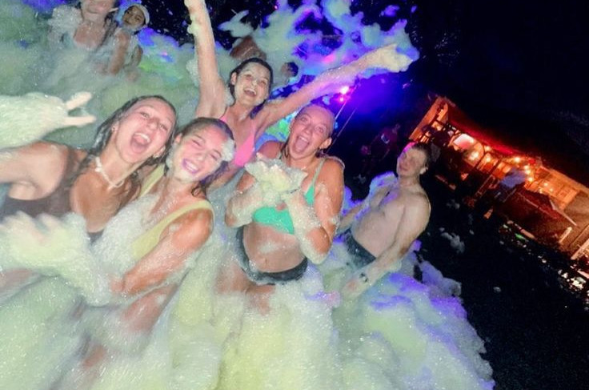
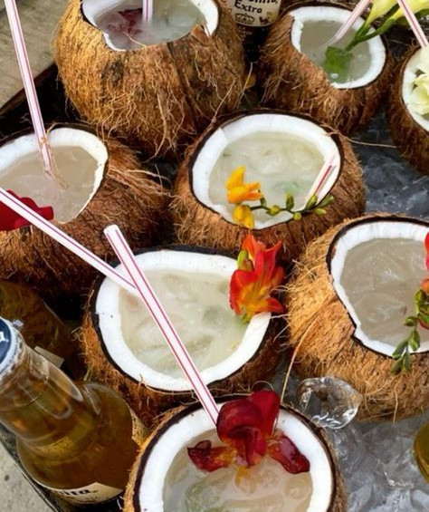
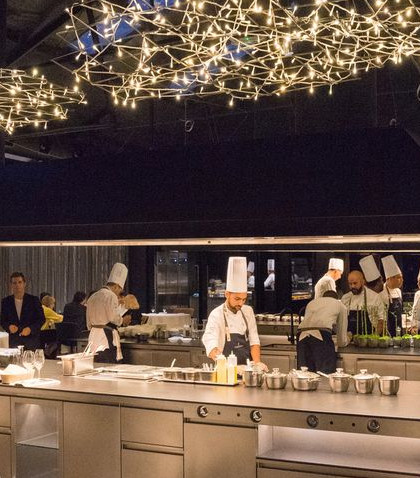
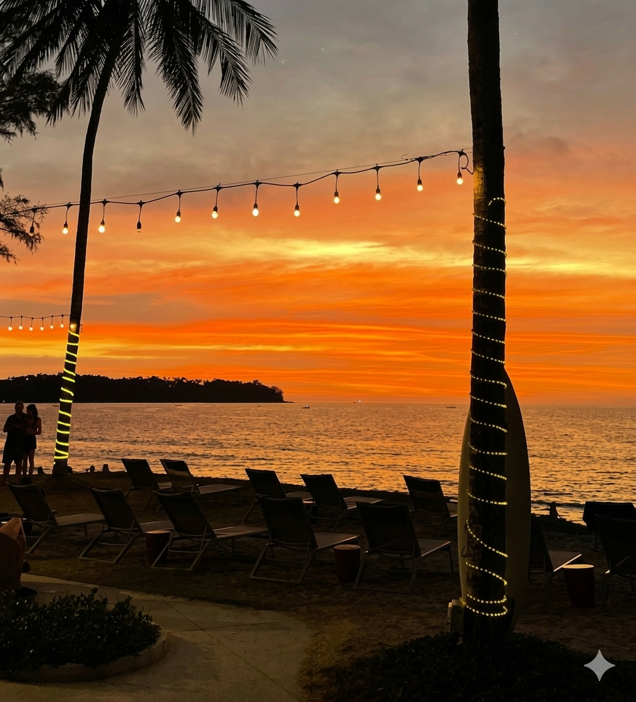
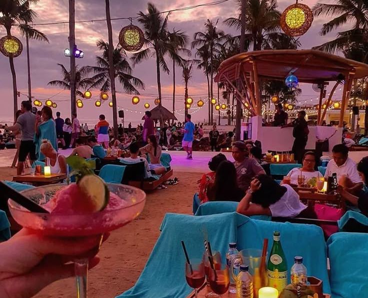

Sobre
Nossa Essencia
O Hi Melody nasceu do encontro entre música, praia e comida feita para compartilhar. A ideia surgiu entre amigos apaixonados por viagens costeiras e festivais ao pôr do sol — lugares onde as pessoas não vão apenas para comer, mas para sentir. O restaurante foi criado para trazer essa atmosfera para a cidade: um espaço leve, colorido e vivo, onde cada detalhe lembra férias, mesmo em um dia comum.


Historia
Fundado por amantes de cultura tropical e da gastronomia casual contemporânea, o Hi Melody começou como um pequeno bar de drinks artesanais inspirado em beach clubs internacionais. Com o tempo, os clientes passaram a ficar mais tempo do que o esperado — conversando, rindo e pedindo algo para acompanhar. Assim nasceu o cardápio: simples, criativo e pensado para momentos longos, não apenas refeições rápidas.



Cozinha
Nossa cozinha mistura sabores tropicais com técnicas modernas. O time culinário trabalha com ingredientes frescos, cítricos e leves, criando pratos que combinam com calor, música e encontros. Cada receita foi pensada para harmonizar com bebidas refrescantes — nada pesado demais, tudo equilibrado para compartilhar.


Experiencia
Mais do que um restaurante, o Hi Melody é um ponto de encontro. A música, a iluminação e os aromas fazem parte do prato tanto quanto os ingredientes. Queremos que cada visita seja como uma pausa na rotina — um lugar para celebrar, relaxar e voltar sempre. Aqui, a experiência começa no primeiro gole e continua até depois da última música.